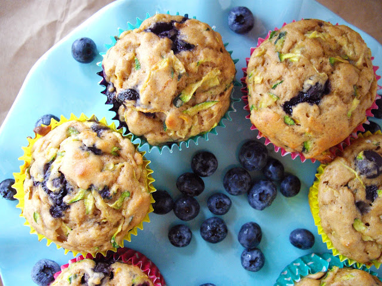
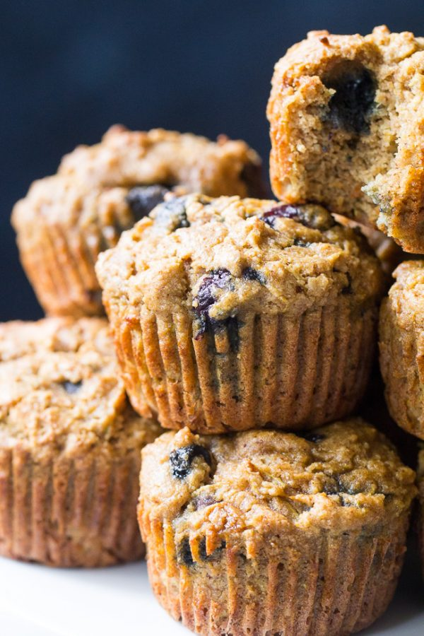

Healthy Blueberry Zuccini Muffins!

These muffins are the perfect snack to appease one's sweet tooth . They are easy to bake and filled with vegetables and wholesome ingredients!
- 1 1/2 cups All purpose gluten free flour or chickpea flour
- 1/4 Baking Soda
- 1 tsp Baking Powder
- 1/2 tsp Salt
- 1 1/2 tsp Cinnamon
- 1 1/2 cups Shredded Zuccini
- 1 tsp Maple Syrup
- 2 tsp Vanilla and Almond Extract
- 1/2 cup Greek Yogurt
- 2 Eggs
- 1 1/2 cups Blueberries
- Prep time: 20 minutes
- Cook time: 25 minutes
- Serving size: 12 muffins
- Preheat your oven to 350ºF
- In a small bowl, stir together the dry ingredients; flour, baking powder, baking soda, salt, and cinnamon.
- In a large bowl, mix in the wet ingredients; beat together the eggs, greek yogurt, and vanilla, until smooth.
- Slowly stir in the flour mixture until just incorporated. Fold in the zucchini and blueberries.
- Scoop 1/4 cup batter each and distribute into muffin pan.
- Bake at 350ºF for 25-30 minutes, until a toothpick comes out clean.
- Cool for about 5 to 10 minutes and enjoy.


Thank you for visiting my website! If you are successful in baking these muffins please snap a picture and share it with me!
Contact me!
- Email: rachel_alonso14@yahoo.com
- Instagram: @rachelalonso_
<- back